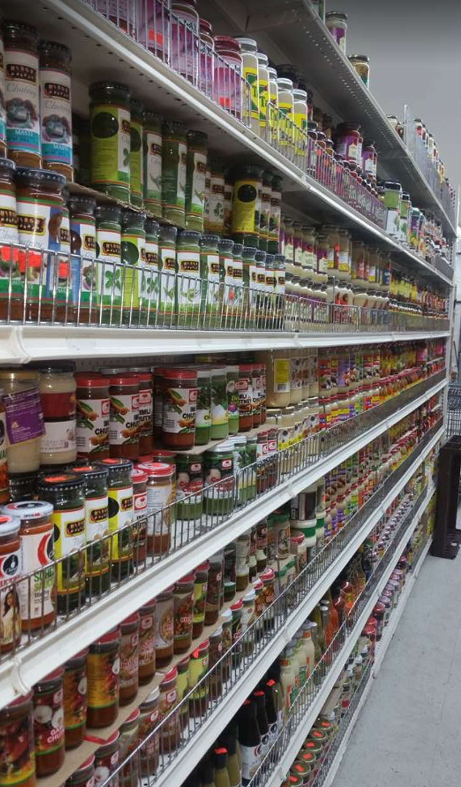

03.24.2020
adding snacks
Added a backlog of recipes today, namely
pancita (a mexican tripe soup),
seema vankaya pappu (chayote dal),
dosa,
cabbage thoran, and
aloo paratha (a potato pancake). Pancita I made pretty recently after an impulse tripe purchase, while the seema vankaya pappu and aloo paratha I've made a few times now, mostly together.
We've been making more indian food lately, after I worked with a dancer based near Journal Square in Jersey City, which has a high concentration of indian supermarkets and restaurants. In particular, I tried making aloo paratha after a really amazing meal at
Mithaas, which served it with a delicious dhal and a series of pickles and chutneys.
Before everything shut down, every time I went over I had been buying most of the indian ingredients from a supermarket nearby called
Big Bazar. I've also been to Apna Bazar Cash and Carry, and Patel Brothers on the same street: they're good, but Big Bazar is just a bit bigger, get a load of that pickle section!
